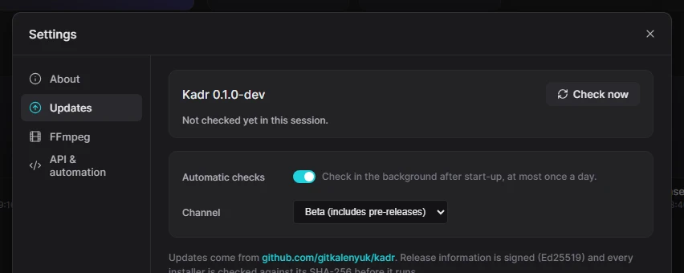
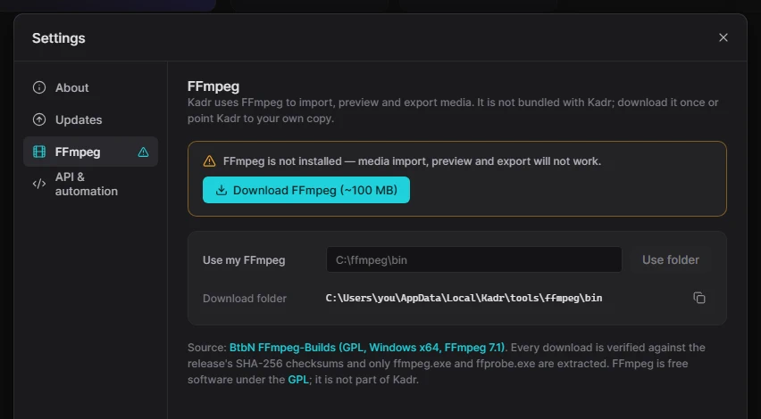

For humansHelp8 min read
Settings & updates
Kadr has very few settings — most choices live where you use them. The Settings window covers updates, rendering on your graphics card, FFmpeg, voices, AI video generation, the AI assistant, spending and keys, the API for AI agents and information about your installation.
Open Settings
- On the home screen: Settings at the bottom left.
- In the editor: Menu → Settings…, or Menu → Check for updates… to jump straight to updates.
The window has nine sections: About, Updates, Rendering, FFmpeg, Voices, Video generation, AI assistant, Spending and API & agents.
About
Shows your Kadr Version (with a Pre-release or Portable label when that applies), the build, the platform and the FFmpeg version. Two lines are especially useful:
- Data folder — where your projects, settings and saved presets are stored. The copy button copies the path.
- Program — where Kadr itself is installed.
Below are links to the website, release notes, the licence and third-party notices. When you report a problem, mention the version shown here.
Updates

Kadr can update itself. Because Kadr is available by invitation, updates come from a private channel: you need the update token the person who invited you gave you. Save it once — paste it in Settings → Updates, or let your AI agent run update.settings with github_token; the KADR_UPDATE_TOKEN environment variable works too. The token is stored only on your computer and is never shown again. Without a token, Check now simply says that the update channel is private; ask for the newest installer instead.
With a token, Kadr checks GitHub in the background after start-up, at most once a day, without slowing anything down. When a new version is ready, a dot appears on Menu (and on Settings on the home screen) and the menu item changes to Update available….
Read what's new
Open Settings → Updates. The new version is shown with its date, size and release notes. Check now checks immediately.
Download
Click Download & install. A progress bar shows the download. Kadr then verifies the file's digital signature and checksum — an update that fails the check is never installed.
Install
Click Install & restart and confirm. Kadr closes, installs the new version and starts again. Your projects are already saved; only a running export would be stopped — so wait for exports to finish first. Choose Later to install another time.
- Skip this version hides a particular update until a newer one comes out (Don't skip undoes that).
- Automatic checks — switch off if you prefer to check by hand.
- Channel — Stable releases (the default), or Beta (includes pre-releases) to get new features earlier, when the vendor publishes them.
Rendering
Kadr draws every frame — in the player, in previews and in the export — on your graphics card: NVIDIA, AMD and Intel on Windows (through Vulkan or Direct3D 12), Apple Silicon and Intel Macs through Metal. That is what makes playback smooth and exports several times faster than on the processor. If no graphics card can be used (an old driver, a remote desktop session, a virtual machine), Kadr renders on the processor instead: the picture is exactly the same, it just takes longer.
- Graphics card at the top shows the card in use, its graphics API, how much video memory it has and a bar with the Video memory used by Kadr right now.
- Renderer — Auto (the default: the graphics card when it works, otherwise the processor), GPU (only the graphics card) or CPU (only the processor, for example to rule out a driver problem).
- Graphics card (the list) — when your computer has more than one, pick the one Kadr should use. By default it takes the fastest one. The same card can appear once per graphics API; Vulkan is preferred on Windows, Direct3D 12 is the fallback.
- Video memory — Automatic lets Kadr use all of the card's memory except what is kept free for the system. Set a limit lets you choose how much it may use, in GB — lower it if you play games, stream or run another editor at the same time.
- Keep free for the system — memory Kadr never touches so that Windows or macOS stays responsive (512 MB by default).
Kadr never uses more than the smallest of: your limit, the card's memory minus the reserve, and what the system allows. Example: on a 12 GB card with the limit set to 12 GB, Kadr uses at most 11.5 GB and leaves 0.5 GB for Windows. Changes apply from the next frame or the next export — no restart. An export that is already running finishes with the settings it started with.
The export window shows which renderer an export uses (for example NVIDIA GeForce RTX 3060, or CPU with the reason). AI agents read and change the same settings with render.devices, render.settings.get and render.settings.set.
FFmpeg

Kadr needs FFmpeg to import, preview and export. This section shows whether it was found and where:
- Download FFmpeg (~100 MB) — downloads it into Kadr's own tools folder (
%LOCALAPPDATA%\Kadr\tools\ffmpeg\bin). Once installed, the button offers Download again. - Choose folder… or Use my FFmpeg — use an FFmpeg you already have: pick or type the folder that contains
ffmpeg.exeandffprobe.exeand click Use folder. Forget removes that choice.
When FFmpeg is found, the status line shows its version and where it came from: Downloaded by Kadr, Folder you chose, Next to Kadr or System PATH. FFmpeg is free software under the GPL licence; it is a separate program, not part of Kadr.
Voices
Voices for text to speech. At the top, the built-in engines (Windows voices, eSpeak NG) with their voice counts and the default voice. Below, Cloud & self-hosted providers: add ElevenLabs, OpenAI, Azure, Google and 35 more services or your own speech server, store their keys, pick models and voices, and decide when Kadr asks before paying. Everything is explained in Voices; how to make a voice-over is in Audio.
Video generation
The providers for AI video generation (Google Veo, Kling, Seedance, Wan, Runway, fal.ai, Replicate and many more): their keys, settings such as a region or a Google Cloud project, the default model and provider, and custom providers. Kadr always asks before a paid generation. See AI video generation.
AI assistant
What powers the built-in assistant: Agents on this computer (Claude Code, Codex, Gemini CLI and others, with Install, Sign in and Test) and API providers (Anthropic, OpenAI, Gemini, OpenRouter, local Ollama and LM Studio…). Here you also choose the default backend and model, the default Permissions mode, how long Chat history is kept and a few limits for long chats. See AI assistant.
Spending
Cloud voices, AI video and the assistant's API providers cost money at the provider. This section shows what Kadr estimates you spent today, your daily limit and what is left today, today's spending by provider and a History of every paid request for the last 7, 30 or 90 days.
- Daily limit — the most Kadr may spend per day on all paid AI providers together (in dollars or another currency; empty = no limit). It resets at local midnight.
- Per provider — an extra limit for one provider, for example 2 USD a day for fal.ai.
Before a paid request Kadr reserves its estimated cost; if today's spending plus running jobs plus that estimate would go over a limit, the request is refused and nothing is spent. Amounts are estimates from the providers' published prices (or the cost the provider reports); your bill comes from the provider.
Keys & secrets
All API keys are kept in one encrypted vault on this computer. Protection shows how: on Windows the keys are encrypted for your user account (Windows Data Protection), on a Mac they are in the login Keychain; Location shows the file. Keys never appear in projects, exports or logs.
- Export writes every key (with labels and order) into one file protected by a password you choose — for moving to another computer or a backup. Anyone with the file and the password gets your keys, so keep both safe.
- Import reads such a file: Merge with my keys adds the keys you don't have yet; Replace everything first removes the keys stored here.
API & agents
Everything you click in Kadr can also be done by scripts and AI assistants (Claude Code, Codex, Cursor, Claude Desktop…). This section shows the local API address (by default http://127.0.0.1:7777) with its state (Listening), a link to the built-in Documentation, the Token file that protects the API, the Endpoint file, and under Connect an AI agent ready-to-copy setup for each agent with the right paths. You don't need any of this to edit videos — but if you're curious, read the AI documentation.
- Port — the port the API listens on (default 7777). Change it if another program already uses 7777, then click Apply: the API moves at once, without a restart. Use default (7777) switches back. Agents keep working: every running Kadr writes its current address to the endpoint file (
api-endpoint.jsonin the data folder), andkadr-mcpandkadrctlread it. - Other computers — off by default: only this computer can connect (recommended). Switching it on lets other computers on your network control Kadr with the token; do it only on a network you trust.
Portable mode
The portable zip (Kadr-X.Y.Z-windows-x64-portable.zip) runs without installation — from any folder or a USB stick. Unzip it and run Kadr.exe.
- The file
portable.txtnext toKadr.exemarks the copy as portable; Settings shows a Portable label. - Your projects and settings are kept in a
datafolder next toKadr.exe, so they travel with it. Check Settings → About → Data folder to be sure. - A portable copy tells you when there is a new version but doesn't install it. Extract the new zip over the old folder, keeping the
datafolder. - The portable version still needs the Microsoft Edge WebView2 Runtime (part of Windows 11) and FFmpeg.
Uninstall
Open Windows Settings → Apps → Installed apps, find Kadr and choose Uninstall. The uninstaller asks two questions:
- Also delete my projects and settings? — answer No to keep them for a later installation.
- Also delete tools Kadr downloaded, such as FFmpeg?
Your original media files are never touched. To remove a portable copy, just delete its folder.